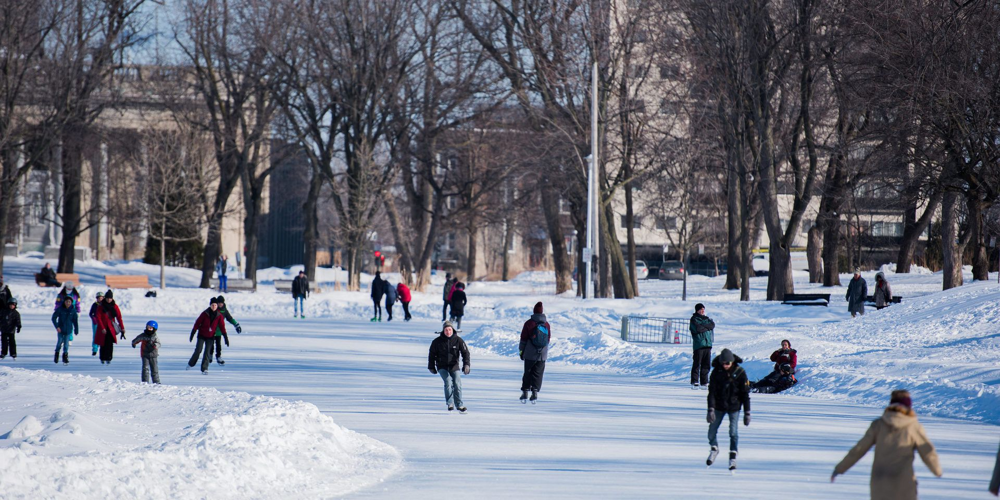
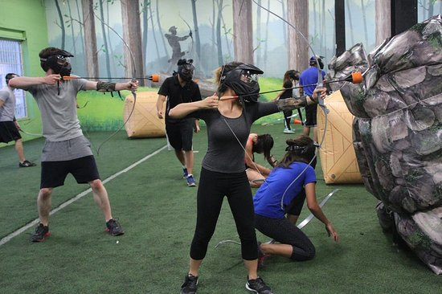
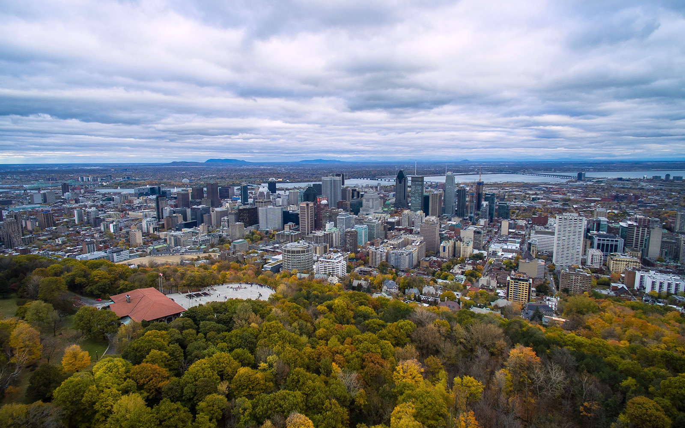

Blog map Montréal
Aiguisez vos patins, la glace vous attend!

L’une des activités les plus pratiquées par les québécois est le patinage durant l’hiver. Vous pouvez vous procurer des patins dans de nombreux endroits notamment Sport Expert, Décathlon ou vous pouvez même en acheter usagé sur kijiji!
De plus, nous avons le lien qu’il vous faut.
Celui-ci est un répertoire des patinoires contenant l’arrondissement et l’état des patinoires.
Répertoire des patinoires dans Montréal
#2: Combat d'Archers
À vos flèches, prêt, Lancez!

Le combat d’archer, est un centre d'amusement qui vous permet d’exercer des matchs contre d’autres adversaires dans un terrain de type foret vague.
Il y a également plusieurs autres activités tels que plusieurs mini jeux avec des salles de destruction pour détruire votre stress etc.
Il y également possibilité de faire du lancer d’haches. Voici ci-dessous le lien du site internet avec toutes les informations ainsi que les tarifs.
Combat d'Archers
#3: Quelle vue!
Un panorama près de chez vous!

Il y a la possibilité de voir un beau coucher du soleil en allant au belvédère du Mont-royal. Cet endroit offre une vue panoramique sur le centre-ville de Montréal. Ainsi que sur le Mont en soi.